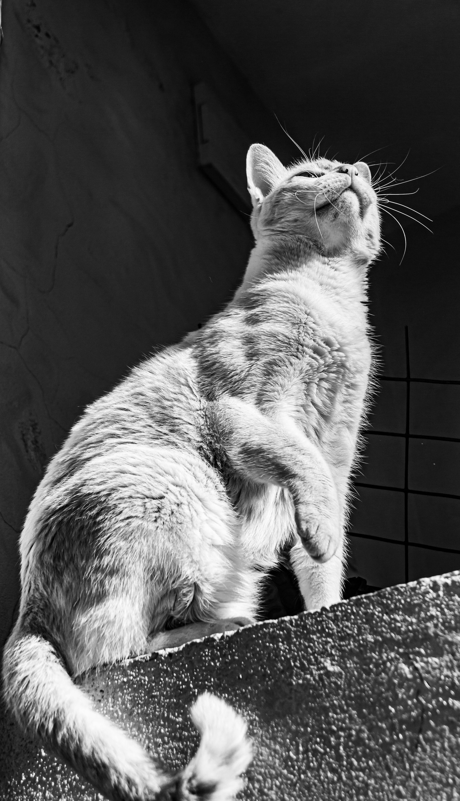
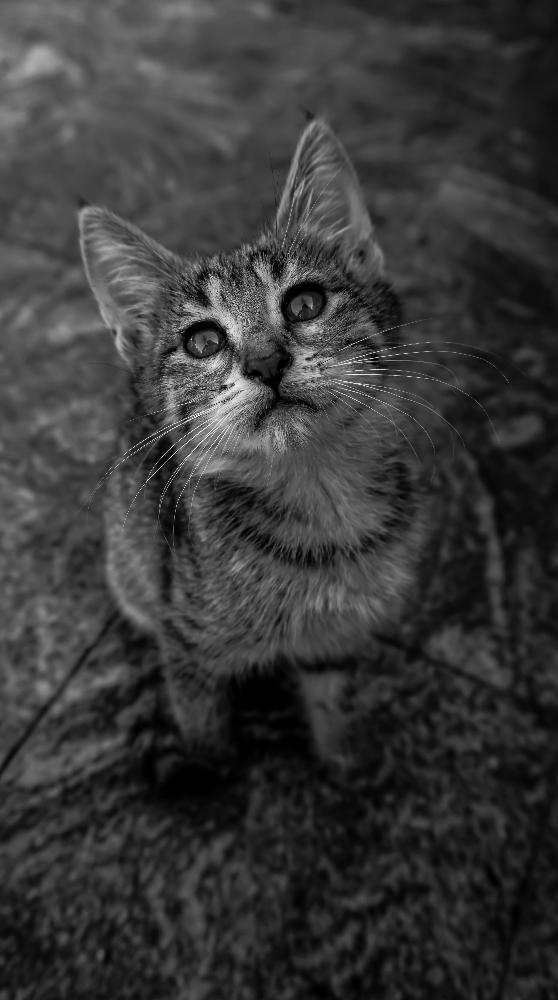
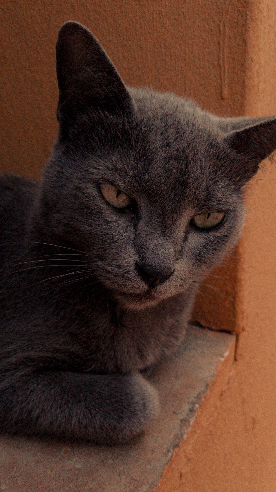

Quienes somos
Somos una clínica de atención médica comprometida con brindar servicios de salud integrales, seguros y de calidad para nuestros pacientes. Nuestro objetivo es ofrecer una atención cercana y profesional, enfocada en las necesidades de cada persona y en la prevención de enfermedades.
Contamos con profesionales capacitados y diferentes servicios médicos destinados a atender consultas generales, situaciones de urgencia y necesidades específicas de nuestros pacientes. Trabajamos para proporcionar un ambiente confiable, humano y cómodo durante todo el proceso de atención.
Nuestros Servicios
- Consulta médica general
- Servicio de urgencias
- Vacunación
- Control y seguimiento de enfermedades crónicas
- Atención de enfermería
- Toma de muestras y exámenes de laboratorio
- Promoción y prevención de la salud
- Control de signos vitales
Equipo Médico
Dra. Laura Martínez — Medicina General Profesional dedicada a la atención integral de pacientes, con experiencia en consulta médica general y prevención de enfermedades. Fortalezas y especialidades:
- Atención primaria y medicina preventiva
- Seguimiento de enfermedades crónicas
- Atención integral del paciente
Dr. Andrés Rodríguez — Médico Familiar
Profesional enfocado en brindar una atención cercana a pacientes de diferentes edades, buscando identificar y prevenir problemas de salud de manera oportuna. Fortalezas y especialidades:
- Atención integral de la familia
- Atención familiar
- Promoción y prevención de la salud
- Manejo y seguimiento de pacientes
Testimonios de nuestros pacientes
- "La atención fue excelente. El personal fue muy amable y el médico explicó claramente cada una de mis dudas."
- "Me sentí muy cómodo durante la consulta. Todo el equipo fue profesional y atento desde que llegué."
- "La atención fue rápida y organizada. Estoy muy satisfecho con el servicio recibido y definitivamente volvería."
Contáctanos
Dirección: Calle 123 #45-67, Medillín, Colombia Ubicación: Ver en Google Maps
Teléfono: +57 123 456 7890 WhatsApp: Enviar mensaje
Correo electrónico: info@veterinariahuellitasfelices.com
Galería de Imágenes


